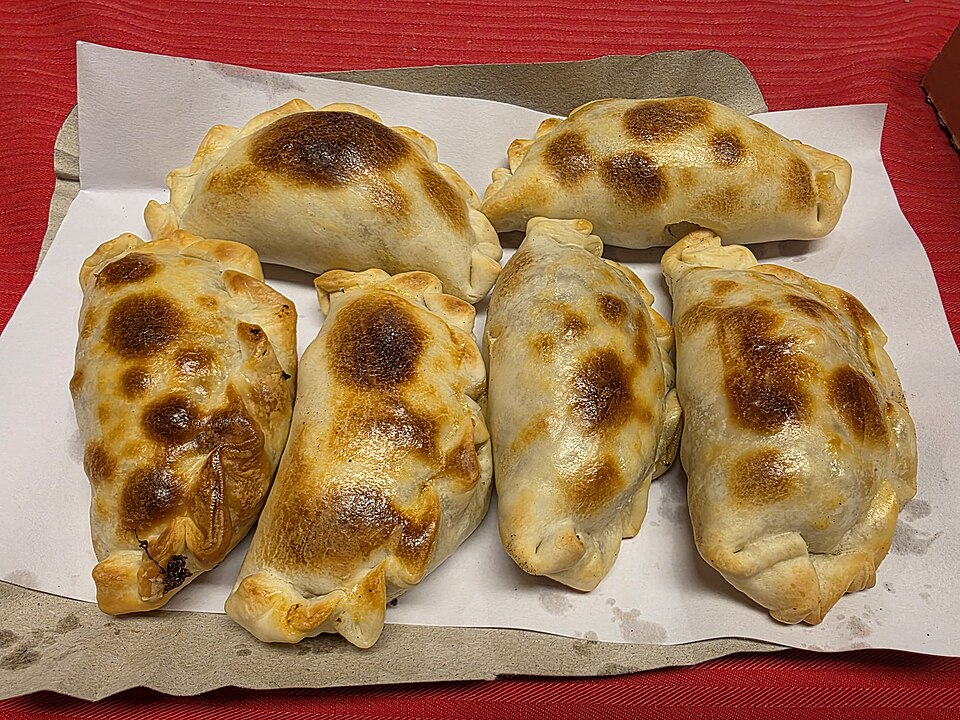

Salgados · Massas fritas/assadas
Maxipastéis de forno

Massa
- 500 g de margarina partida em pedacinhos
- 650 g de farinha de trigo
- ½ colher (chá) de sal
- 1 colher (chá) de fermento em pó
- ½ xícara (chá) de água gelada
- ½ xícara (chá) de leite gelado
Recheio
- 1 ½ xícara (chá) de carne cortada em pedaços
- 50 g de margarina
- 2 cebolas raladas
- ½ colher (chá) de alho amassado
- 1 colher (sopa) de mostarda
- 1 tablete de caldo de carne
- 2 colheres (sopa) de farinha de trigo
- 1 colher (sopa) de salsa picadinha
- 1 colher (sopa) de cebolinha verde picada
- 1 lata de creme de leite Nestlé, sem soro
- Pimenta-do-reino a gosto
Modo de preparo
- Para a massa, misture a margarina aos ingredientes secos. Junte a água e o leite gelados e amasse até formar uma massa lisa.
- Deixe a massa descansar enquanto prepara o recheio.
- Para o recheio, doure a cebola e o alho na margarina. Junte a carne, a mostarda, o caldo de carne e tempere com pimenta-do-reino.
- Acrescente a farinha de trigo, mexendo para engrossar. Finalize com a salsa, a cebolinha e o creme de leite.
- Abra a massa, recheie, feche os pastéis e pincele com gema. Leve ao forno até dourar.
Observação: a parte direita da foto está encoberta pela mão; o preparo foi organizado a partir do trecho legível.